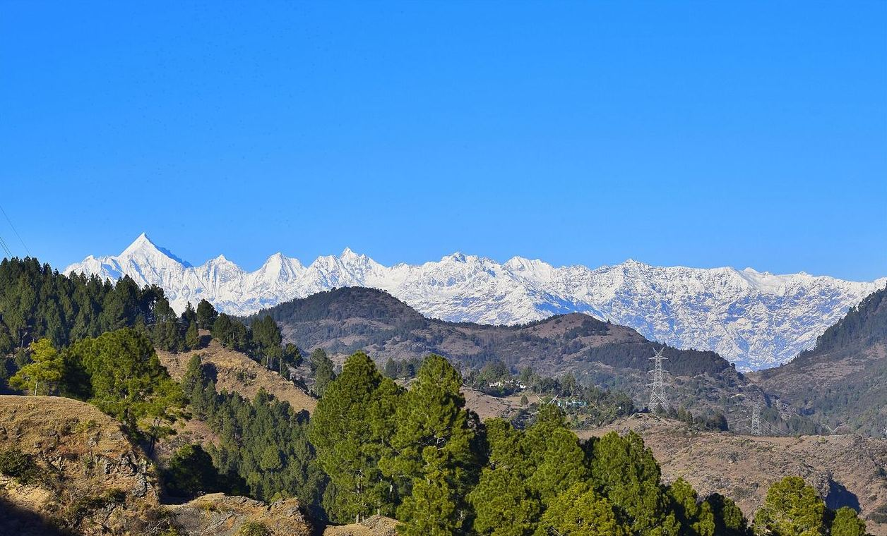
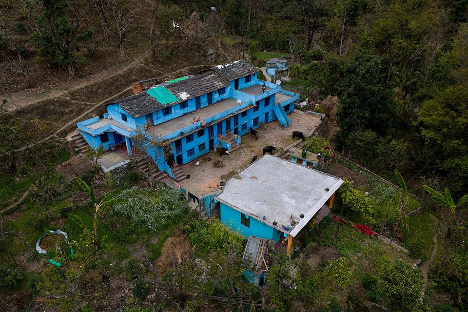
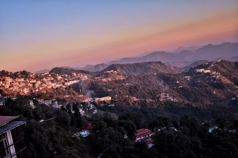
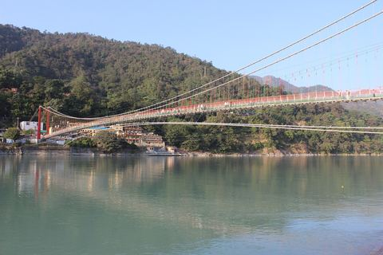
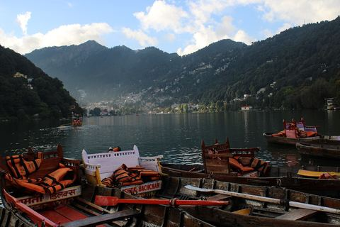
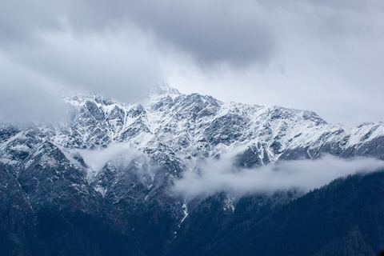
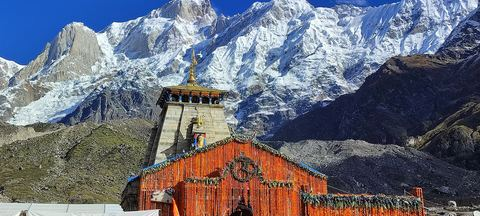

Photo credits
Illustrative photos from Wikimedia Commons, used under their stated licences. Not official tourism-department imagery. Each photo was resized and compressed (the hero photo also had its black frame cropped); nothing else was changed. Photos licensed CC BY-SA may be reused under the same licence.

Panchachuli peaks above forested Kumaon hillsUsed in: HeroAuthor: Mukul.pandey07Licence: CC BY-SA 4.0Source: Panchachuli Peaks.jpg · black border cropped, resized and compressed
Aerial view of a traditional Kumaoni house on a forested hillsideUsed in: Contact bannerAuthor: Harshit SRLicence: CC BY-SA 4.0Source: Traditional Kumaoni house.jpg · resized and compressed
Mussoorie hill town on a ridge at dawnUsed in: Region card: MussoorieAuthor: Robertyadav44Licence: CC BY-SA 4.0Source: Mussoorie-6530427.jpg · resized and compressed
Lakshman Jhula suspension bridge over the Ganga at RishikeshUsed in: Region card: RishikeshAuthor: SnehrashmiLicence: CC BY-SA 4.0Source: Lakshman Jhula Bridge - Hrishikesh - Uttarakhand 001.jpg · resized and compressed
Naini Lake with rowing boats, NainitalUsed in: Region card: NainitalAuthor: Praveen Singh BishtLicence: CC BY 2.0Source: Naini Lake, Nainital, Uttarakhand, India.jpg · resized and compressed
Snow-covered Himalayan peaks seen from AuliUsed in: Region card: AuliAuthor: Navi8aprLicence: CC BY-SA 4.0Source: Auli mountains.jpg · resized and compressed
Kedarnath temple with snow-covered peaks behindUsed in: Region card: Char DhamAuthor: Nehasnaps0306Licence: CC BY-SA 4.0Source: Kedarnath temple in uttarakhand.jpg · resized and compressed